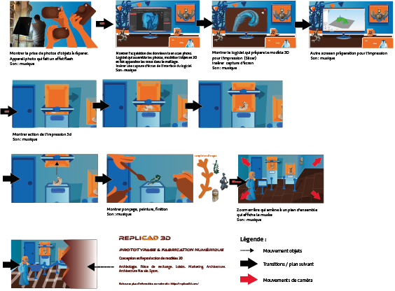

Durant un stage d’un mois en distanciel chez Replicad 3D, quatre génériques dérivés ont été créés afin d’illustrer différentes utilisations des processus d’impression 3D, notamment en archéologie et muséographie, prototypage, en restauration du patrimoine ainsi qu’en modélisation pour l’industrie.
https://www.behance.net/gallery/245108447/Motion-design-Replicad-3D
Processus :
Le projet a commencé par des recherches personnelles sur l’impression 3D et des discussions avec l’agence pour déterminer ce qu’elle souhaitait retranscrire. Un premier storyboard a été réalisé pour établir la structure des génériques, puis les illustrations des plans ont été créées en mélangeant des aplats vectoriels et des photos fournies par l’agence.
Par la suite, un storyboard plus complet a été proposé avec les visuels afin que l’agence puisse vérifier le style graphique, les couleurs et la typographie. Et enfin, les génériques ont été animés sur After Effects pour produire les motion design finaux avec mise en commun des plans et ajouts de musique sur Premiere Pro.
Adobe Illustrator, After Effects et Premiere Pro